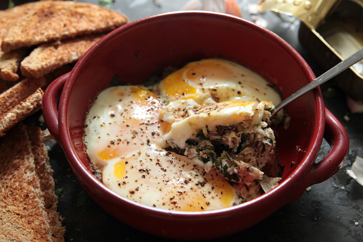

Back
Fisherman's Eggs

A tried and true nutrionional powerhouse!
Make sure to not give yourself salmonella in the process of making this!
This recipe is sourced from here.
Ingredients
- 2 (4-ounce) cans sardines in olive oil
- 3/4 cup red onion diced
- 1 Roma tomato
- 1/4 cup fresh parsley chopped
- 3 cloves garlic minced
- 2 tablespoons Kalamanta olives chopped
- 1/2 teaspoon black pepper
- 4 eggs
For Serving
Steps
- Place a small cast iron skillet or baking dish in a cold oven. Preheat to 350°F.
- Drain the sardines and add them to a mixing bowl. Mash with a fork. Add the onion, parsley, tomato, olives, garlic, and black pepper. Mix well.
- Remove the skillet from the oven and add in the sardine mixture, spreading it out in an even layer. Return the skillet to the oven an bake for 10 minutes.
- Take the skillet out and carefully crack the eggs on top. Continue to bake until the egg whites have set, about 8-10 minutes.
- Let rest for 5 minutes before serving with arugula and hot sauce.